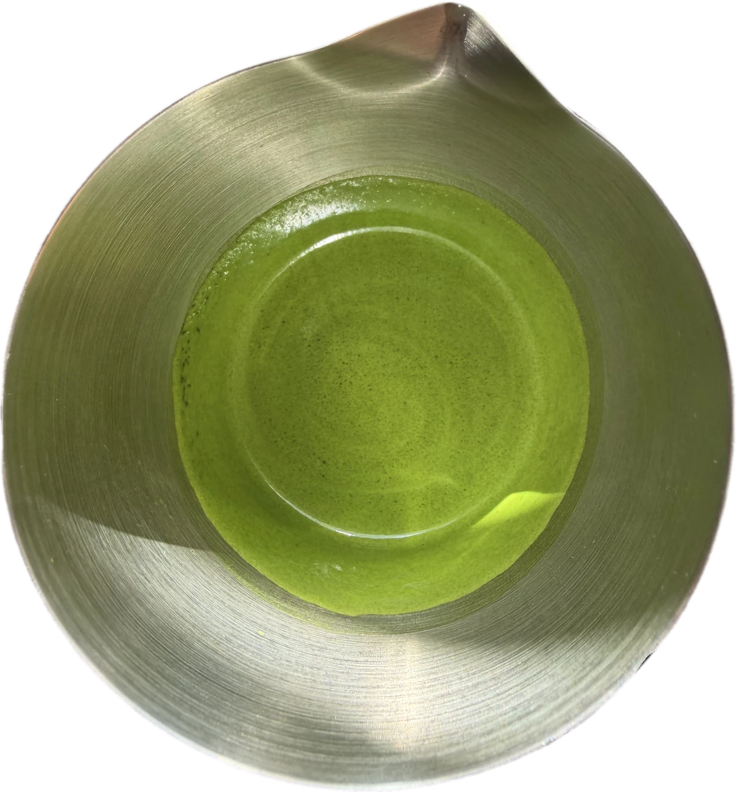

Presets
The three you will use most.
Matcha asks for one thing you cannot measure: the speed of a wrist.
Grams, milliliters and degrees all stay where you put them. That does not.
So that is the part Sous takes.
One programmed cycle. Nothing to stop, adjust or finish yourself.
A fast vortex draws the sifted matcha down through the water, evenly, with no whisk in the cup.
Then the pace drops. The slower stage settles the larger bubbles and leaves a finer, polished surface. That finish is the part that takes practice to repeat by hand.
Water into the vessel first. Use the etched 40, 80 or 120 ml marks.
Measure it, then sift it straight over the water.
Choose a preset and press start. Sous runs the full cycle on its own.
Straight, over ice, or finished with milk.
Three presets for the preparations you return to. Eighteen manual speeds for when a tea or a recipe asks for something else.
The three you will use most.
Manual control when a tea asks for it.
From a concentrated latte base to matcha served straight, without a second vessel.


Yours
A two-speed automatic mixer. Fast to bring the matcha through the water, then slower to refine the finish.
Nothing is charged until your Sous ships. Cancel any time before then.
There is real pleasure in making matcha by hand. If you like the whisk, keep using it. Sous sits beside the chasen, not in place of it.
The tea stays your choice. What Sous adds is consistency: same speed, same duration, same finish, first cup or fifth. Thirty seconds, hands free.
Keep the chasen. Choose the tea. Sous does the mixing.
We came to Matcha Sous from behind the bar, where repetition reveals what matters.
Weigh the tea precisely, measure the water, hold the recipe constant, and the cup still shifts with the hand making it. Easy to miss over one matcha. Impossible to miss during service.
We were not trying to take craft out of matcha. We were trying to support the hardest part of it. That became Matcha Sous.

We did not set out to make a gadget. We set out to make the best cup of someone’s day easier to reach on the mornings that do not cooperate. If Matcha Sous earns a permanent place on your counter, it has done its job.The Matcha Sous team